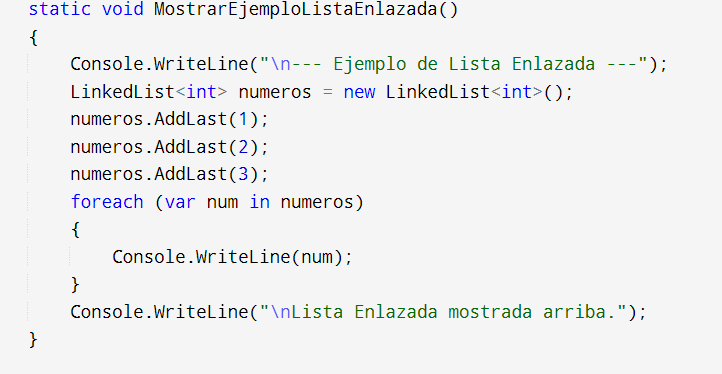

Concepto de lista enlazada
...
Una lista enlazada es una estructura de datos lineal que se utiliza para almacenar
una colección de elementos de forma dinámica. A diferencia de los arrays,
las listas enlazadas no requieren un bloque continuo de memoria; en cambio, se componen de nodos conectados entre sí mediante punteros.
